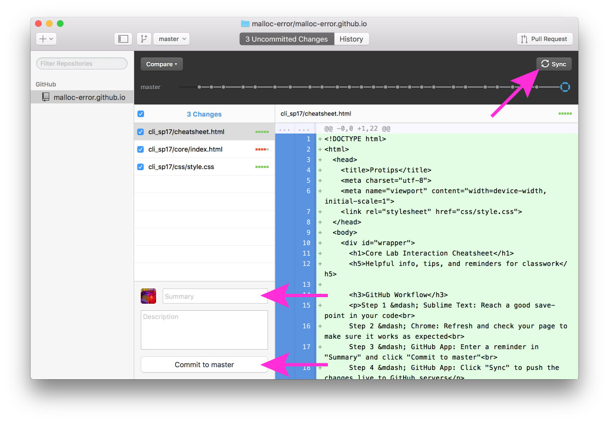

Step 1 — Sublime Text: Reach a good save-point in your code
Step 2 — Chrome: Refresh and check your page to make sure it works as expected
Step 3 — GitHub App: Enter a reminder in "Summary" and click "Commit to master"
Step 4 — GitHub App: Click "Sync" to push the changes live to GitHub servers
Step 5 — Chrome: Refresh yourname.github.io, which may take a minute to update
